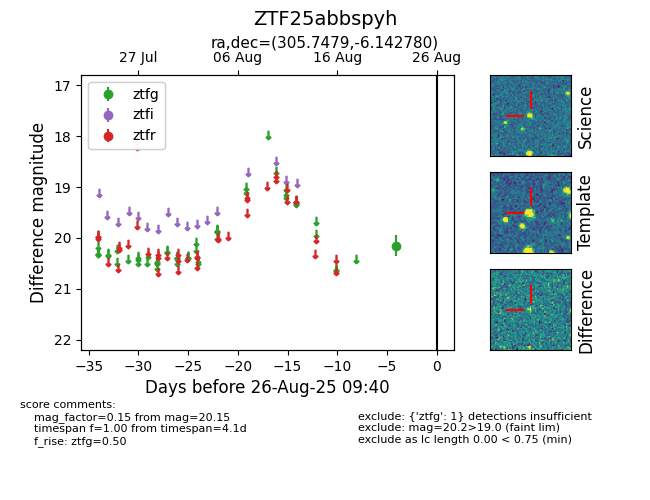

Target ZTF25abbspyh at 2025-08-26 09:40, see:
FINK: fink-portal.org/ZTF25abbspyh
Lasair: lasair-ztf.lsst.ac.uk/objects/ZTF25abbspyh
ALeRCE: alerce.online/object/ZTF25abbspyh
alt names
ZTF25abbspyh (ztf,fink)
coordinates:
equatorial (ra, dec) = (305.7479,-6.14278)
galactic (l, b) = (37.9914,-23.13851)
photometry
last ztfg=20.15
1 ztfg detections
